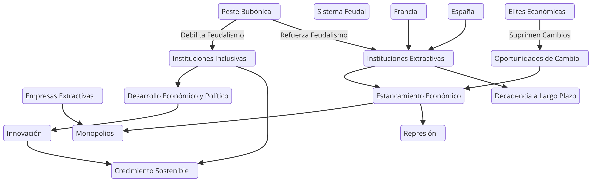

En este capítulo, Acemoglu y Robinson exploran cómo pequeñas diferencias históricas pueden tener consecuencias drásticas a lo largo del tiempo. Un ejemplo es la influencia de la peste bubónica en Europa, que debilitó el sistema feudal y permitió la creación de instituciones inclusivas en algunos países, como Inglaterra. Mientras tanto, en otros lugares, como Rusia, la peste reforzó el poder de las instituciones extractivas.
Aquí, las empresas extractivas juegan un papel crucial en cómo se consolidan o desafían las instituciones. Las élites económicas que se benefician de este sistema fomentan un entorno en el que las oportunidades de cambio son limitadas, y cualquier perturbación es suprimida antes de que pueda tomar forma. El impacto de pequeñas diferencias en los sistemas institucionales puede significar la perpetuación de monopolios y empresas protegidas.